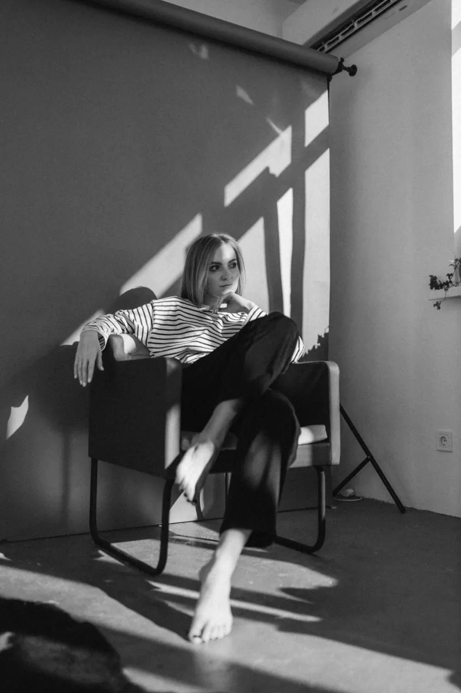
Case 01 01/ 04Lifestyle App
Fashion social network · Mobile app
- Challenge
- Bringing content creators and sustainable brands together in a single app.
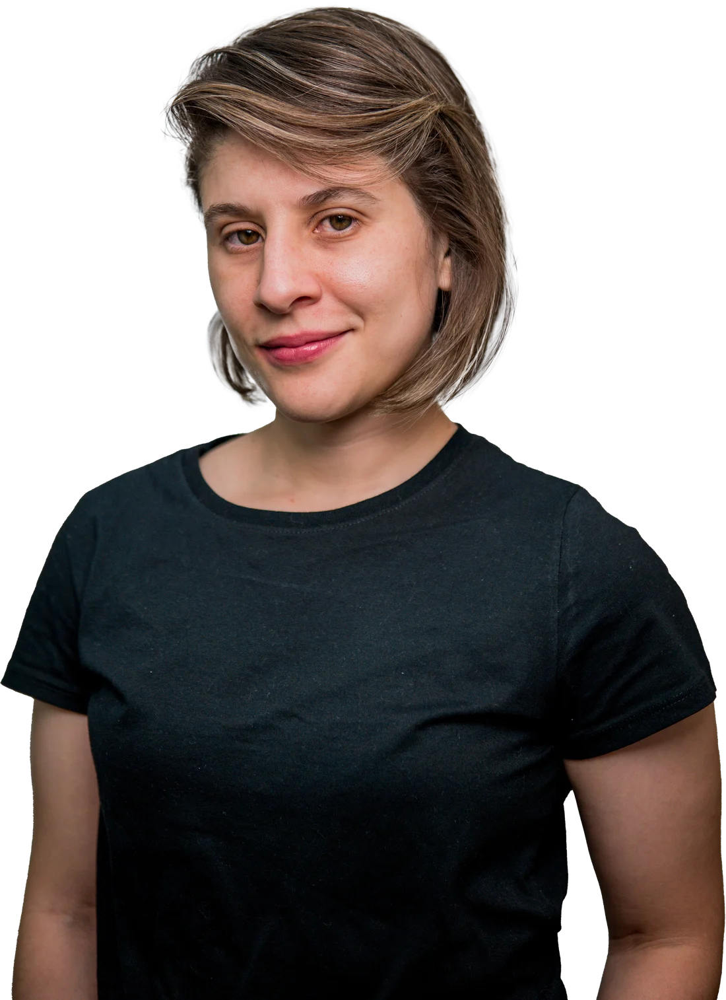
Product Designer with 6+ years of experience leading complex initiatives across B2B SaaS and fintech, combining product strategy, design systems and technical leadership to build scalable digital experiences.
I evolved an existing design system into an AI-first, code-aligned foundation that sped up prototyping, handoff, frontend delivery and QA.
I bridge Product and Engineering, translating business objectives, user needs and technical constraints into product solutions, with a focus on quality, scalability and measurable impact.
I have experience shaping AI-native product experiences, simplifying complex financial workflows and redesigning platforms in production.

Case 01 01/ 04Fashion social network · Mobile app
Digital credit converter · Fintech
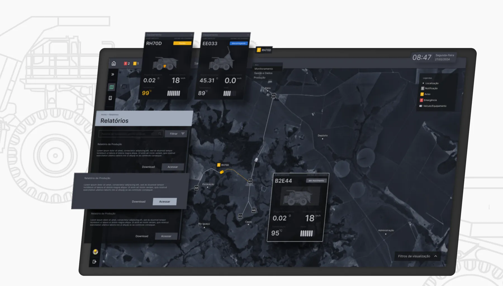
Case 03 03/ 04Autonomous equipment · Web system
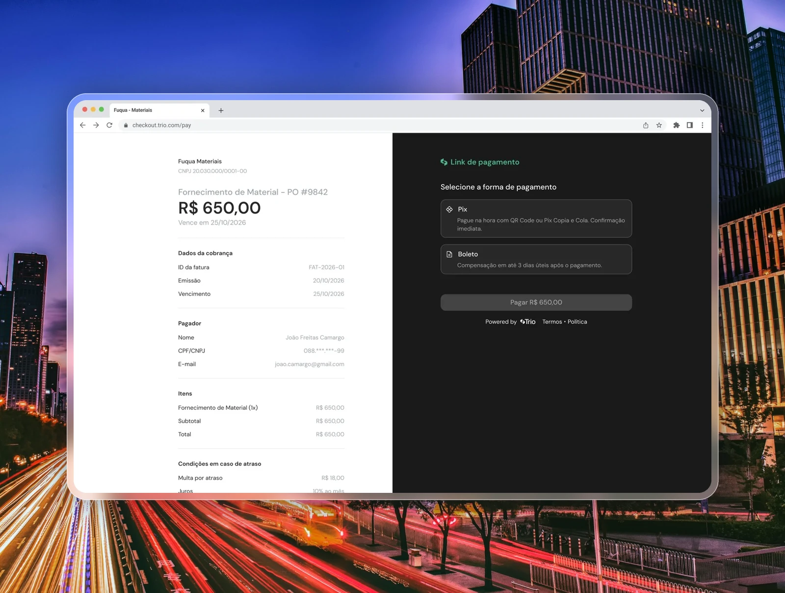
Case 04 04/ 04Payment link redesign · B2B fintech
Design team leadership, DesignOps, product thinking, process development, stakeholder alignment and project management.
Product discovery, user interviews and research, workshops, design sprints, journey and business process mapping, requirements definition.
End-to-end product design, information architecture, complex workflow design, wireframing, prototyping, usability evaluation, legacy system redesign and responsive web and mobile design.
Design system architecture and modernization, component governance, design tokens, Figma variables and variants, design-to-code alignment, technical feasibility, HTML/CSS and UX QA.
AI-assisted design, MCP-ready Figma files, semantic layer naming, AI-assisted design-to-code workflows and pre-handoff interaction validation.
Lean UX, Design Thinking, Design Sprint, Agile/Scrum and Data-Informed Design.
andreza.siarom@gmail.com
An app that brings together everyday fashion trends, champions conscious brands and empowers small creators.
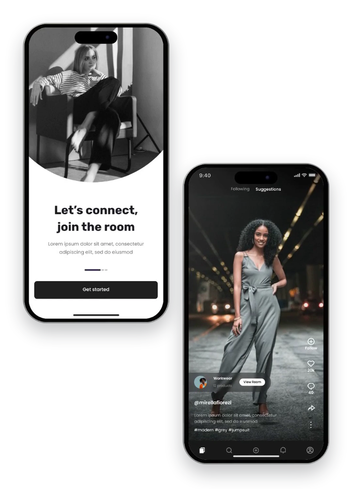
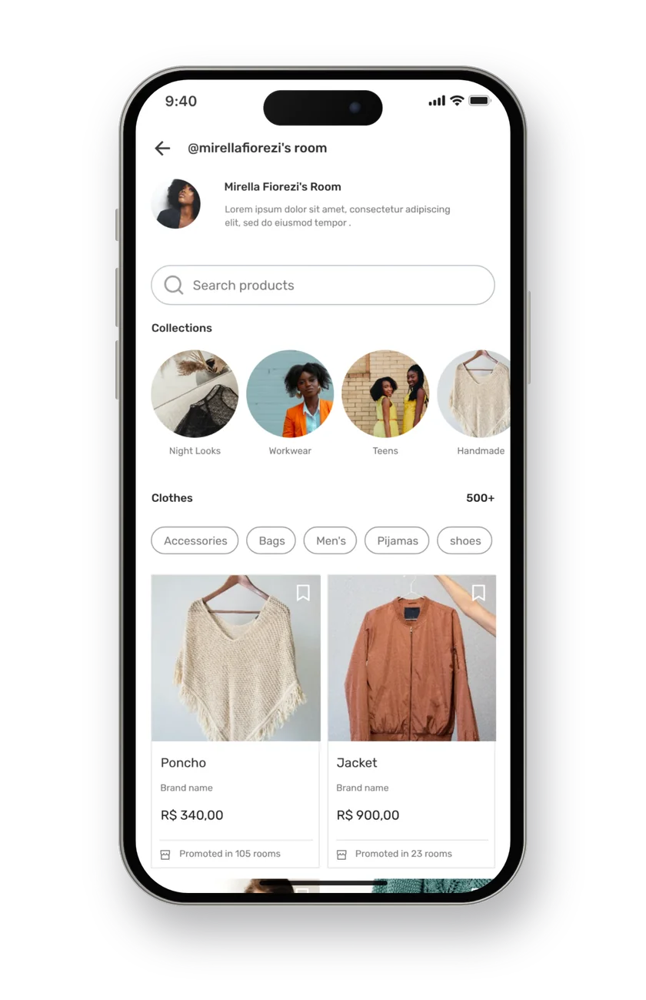
Users can share their lifestyles and fashion content, interacting and engaging with their consumer audience.
The platform will select sustainable fashion brands that can put their products on sale. Products will be available for users to curate and buy within the app.
Established architecture company looking to expand.
Operating in a market not yet explored, focused on the online shopping segment.
Strengthen the brand online and win a new audience profile.
A scalable model with sustainable long-term growth.
A strong connection between the brand and sustainability.
Gen Z shoppers prioritize sustainability recommendations when buying clothes
Social media plays a central role in how Gen Z discovers and buys products
Influencers drive 75% of online purchases among Gen Z consumers
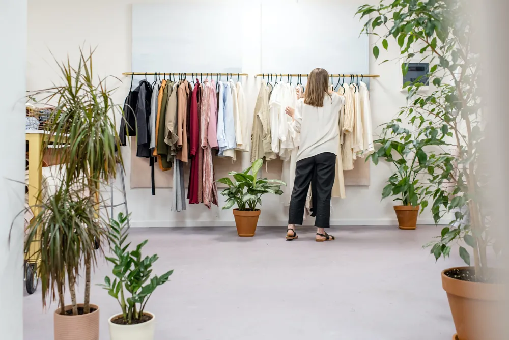
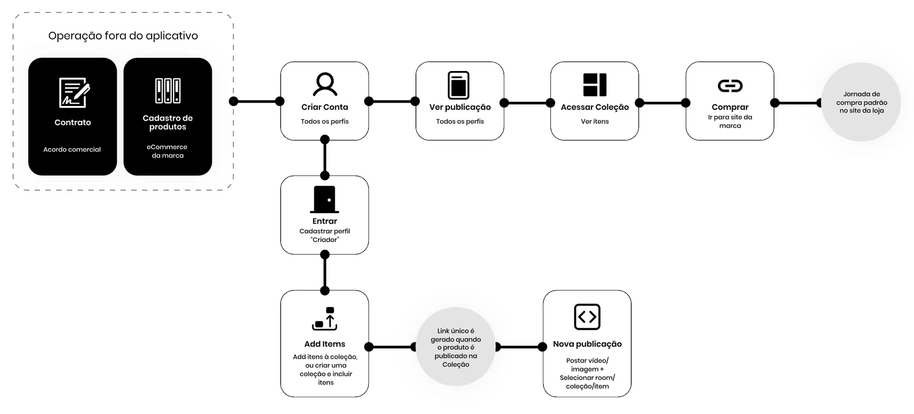
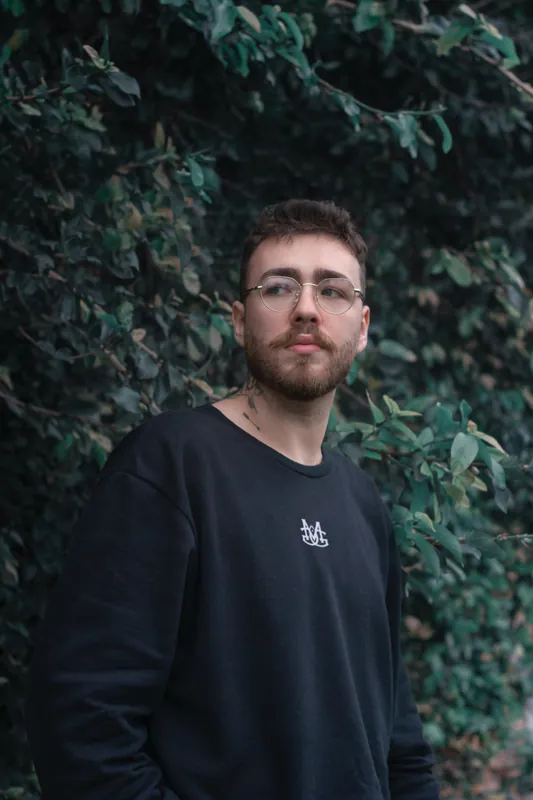
Lucca lives in São Paulo and works remotely for a North American company. He likes to travel, climb and play guitar with friends. He is a sports fan, and his favorite hobby is skateboarding after work.
Most-used networks
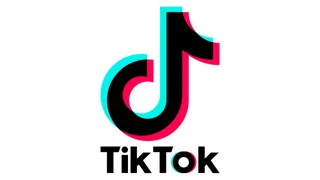
3ºHis motivations lean toward a “work-life balance” lifestyle. He knows professional success matters, but doesn't want to give up enjoying every moment of life. Lucca is more introspective, yet very active on social networks. He often shares his travel experiences and moments when he's practicing a hobby.
“Everyone has their own style and that appeals to me. I like mixing references and having the freedom to create my identity.”
Maria Luiza is an Architecture student. She likes to spend time building inspiration boards, loves reading and enjoys writing poetry. Malu likes to follow new trends, and her hobbies are yoga, online games and TV series. She prefers clothes that are comfortable, sustainable, stylish and affordable.
Most-used networks
Feel good in what she wears, stand out and find quality clothes and items at an accessible price. She spends a lot of time online and loves sharing her looks and interacting with posts from her favorite influencers and brands.
“In recent years my style changed a lot, and that made me rethink what motivates my purchases.”
Inspiration
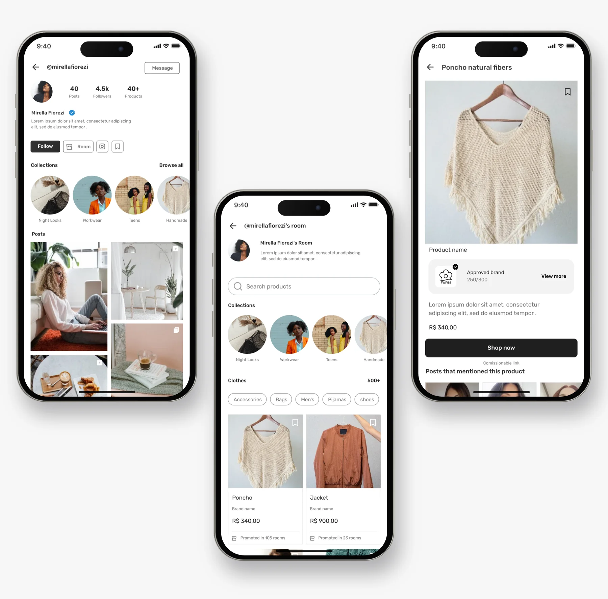
Instant conversion of a credit card limit into cash.
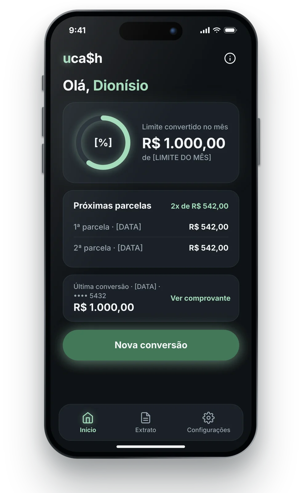
Simplify the personal credit application process, making it fast and requiring no collateral.
Fintech in the ideation / pre-seed stage.
Build a viable product and business vision with growth prospects in order to raise investment.
Compete for space with large players in the financial market.
Change the traditional personal credit model.
Put the user at the center of the business.
A bureaucratic, hard-to-access journey
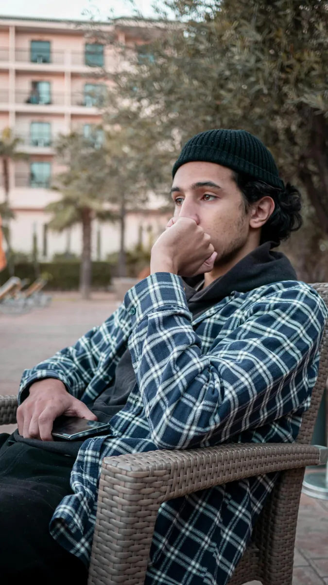
Consumers are limited to borrowing only from banks where they already have a relationship and history.
Applying for a personal loan usually requires an extensive list of documents, which makes the process bureaucratic and slow.
Financial institutions usually offer standardized products, without considering each consumer's individual needs and profile.
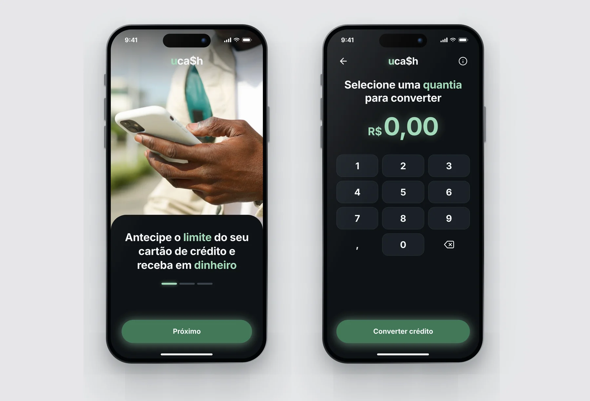
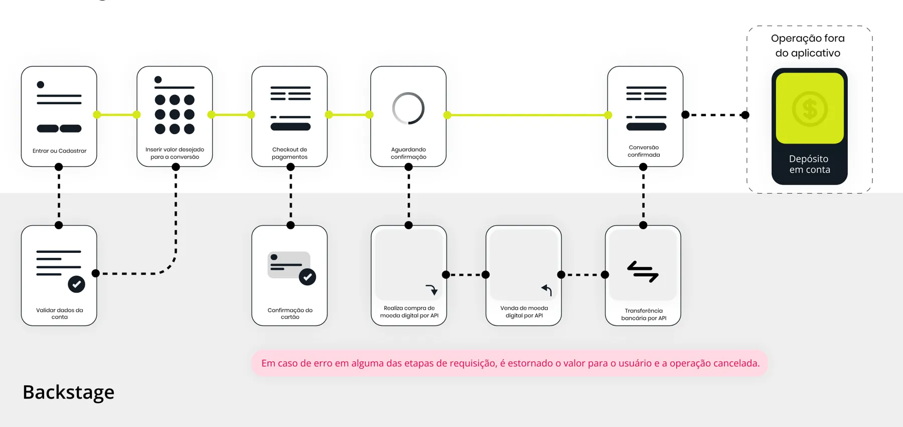
Regina likes technology and embraces the convenience of online shopping.
She appreciates the ease and accessibility of buying items from the comfort of her home, which lets her make well-informed choices aligned with her financial goals. Whether it's investments or everyday purchases, she values transparency and value for money.
Most-used apps and sites
She looks for convenient ways to manage her finances, buy products and handle transactions without unnecessary complications.
Her main goal is to keep her financial stability and secure a safe future for herself and her family.
“My finances are always as organized as my online investments. I prefer value for money in everything I do, securing a solid future with no surprises. I value the peace of mind that comes with financial responsibility.”
Focused on the present, he prefers to live in the moment and doesn't prioritize long-term financial planning.
He appreciates direct approaches and likes to seize opportunities that align with his values and desires.
Most-used apps and sites
He wants more financial stability. After finishing college, he is looking for a well-paid job.
He likes buying products from well-known brands and following the latest trends.
“Although financial stability is important, I'd rather invest in my business and in experiences that make me happy than agonize over complicated financial planning. After all, life is too short to worry about things that can wait.”
Main market solutions with similar propositions
| Brand | *Position | Profile** | Features | Pros | Business model | Value proposition | Cons |
|---|---|---|---|---|---|---|---|
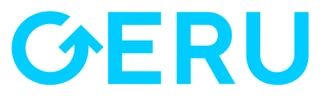 | Direct | In debt |
| Credit within 1 day (after approval) | Service fee per transaction | Online loans with no collateral, with rates based on the credit profile | Credit pre-analysis |
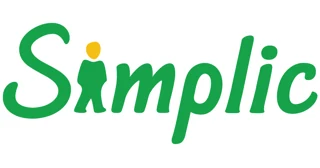 | Indirect | In debt |
| Credit within 1 day (after approval) | Service fee per transaction | Online personal loans, even for people with a poor credit record. | Credit pre-analysis |
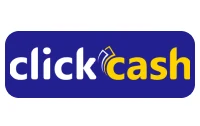 | Indirect | In debt |
| Credit within 1 day (after approval) | Service fee per transaction | The personal loan is 100% online. The company promises fast approval, possibly within one business day, from request to money in the account. | Credit pre-analysis |
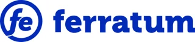 | Indirect | In debt |
| Credit within 1 day (after approval) | Service fee per transaction | A line of credit that needs no collateral, such as property or a car, and no proof of income. | Credit pre-analysis |
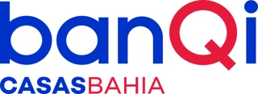 | Indirect | Materialist |
| Credit within 1 day (after approval) | Service fee per transaction | Prepaid card with cashback, personal loan offer and free transactions. | Credit pre-analysis |
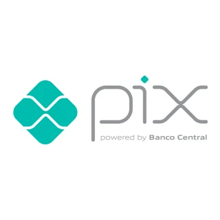 | Direct | - |
| The amount is sent instantly to another account | Service fee per transaction | No need to ask for the recipient's account and details. | Transfer fees + installments |
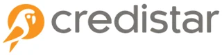 | Indirect | Materialist |
| Credit within 1 day (after approval) | Service fee per transaction | Online payment backed by a credit card | Credit pre-analysis |
**Profile segmentation was based on the survey “Brazilians' Relationship with Money”, published in February 2022 by Google in partnership with Liga Pesquisas.
*How competitors were defined:
Indirect: Same consumer, but with other credit services.
Direct: Same consumer and same credit service.
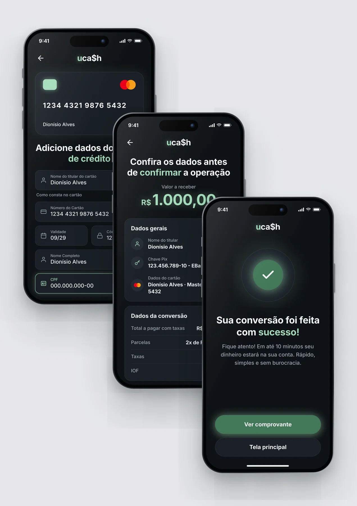
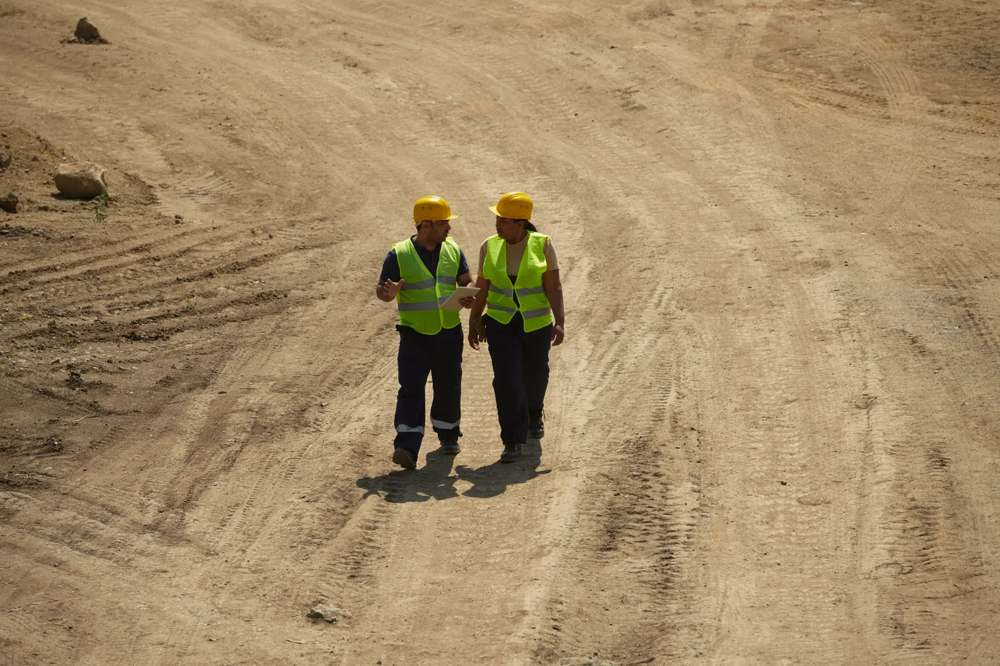
Route tracking, equipment health management and analysis of operational performance.
A better user experience, lower training costs, higher team productivity and increased operational safety.
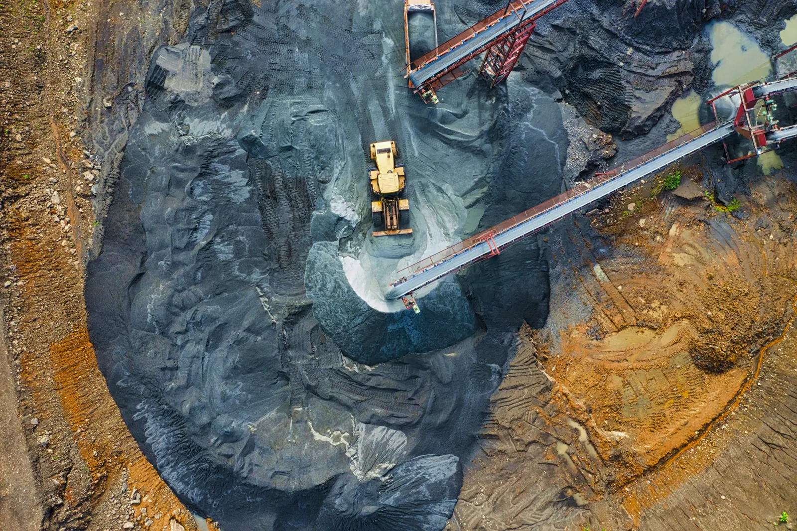
Established company in the mining sector.
Redesign the entire structure of the current product and rethink flows and interactions.
Show visually, through the product, the technological advances implemented in the operation.
Convey more confidence in technology-driven processes.
Ensure users stay fully attentive while operating the system.
Overview of the process from the key user's point of view.
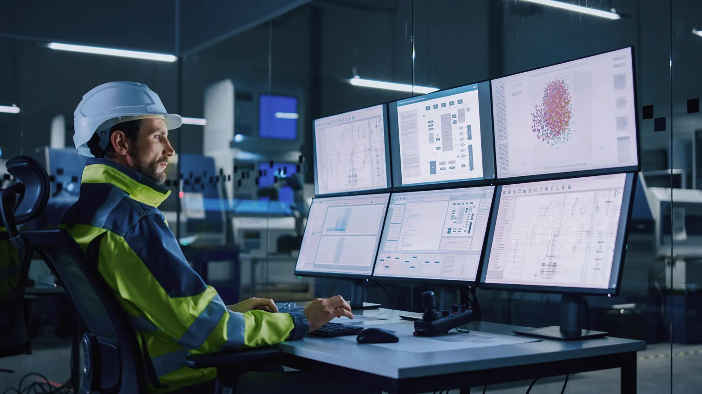
The current system is complex and not intuitive.
Spending on usage licenses for third-party systems
Slow to generate consistent production data
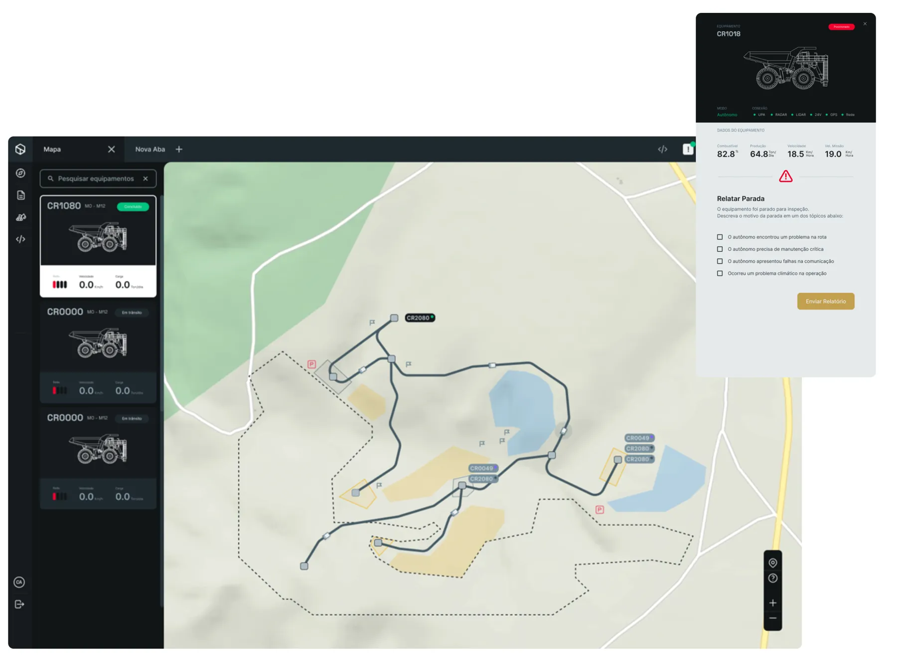
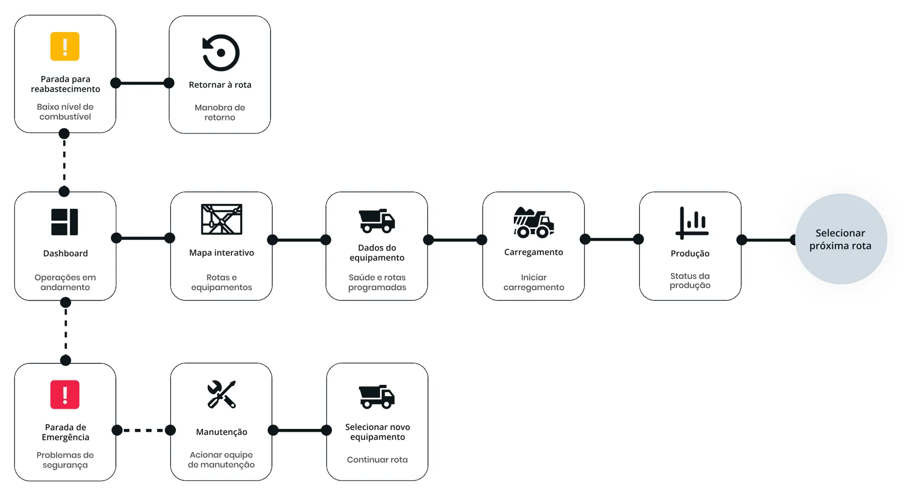
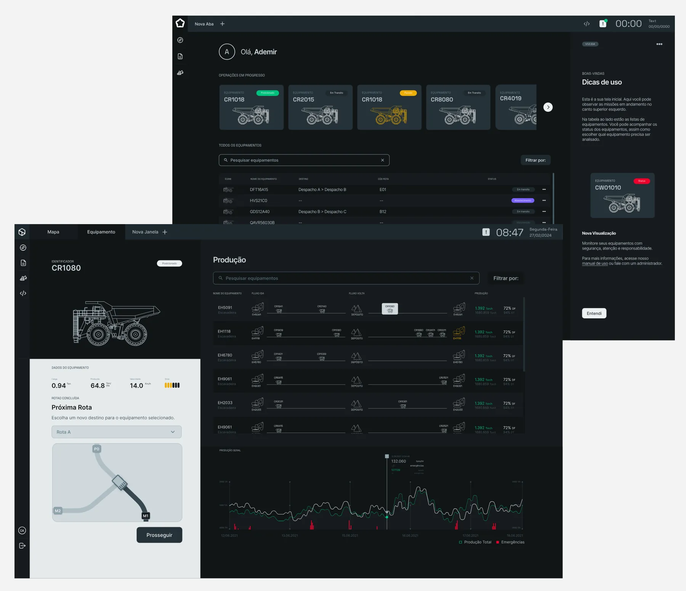
4 payment journeys redesigned in 1 week, in a project that would usually take at least 3.
Trio is a B2B fintech. Its clients create charges in internet banking and send their customers a payment link that opens a web checkout with Pix and boleto.
A live feature that had to keep working throughout the redesign.
Designed by someone who had left the company, with no one to ask why each decision was made.
Pix Automático required following the Central Bank's Journeys 2, 3 and 4, described in a 51-page guide.
It had to ship as fast as possible, without giving up the design system or handoff quality.
More than 40 screens in three parallel flows, each one in desktop and mobile.
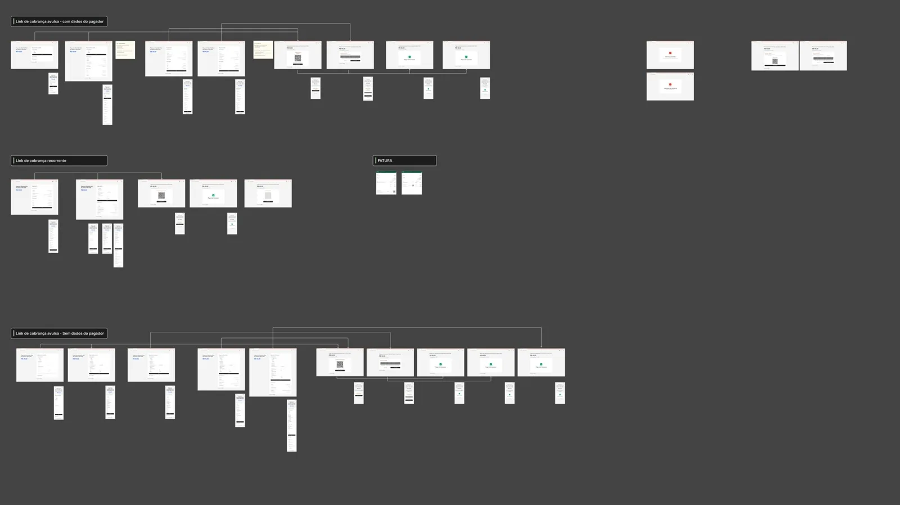
Before creating any screen, I located the mockups and requirements already in the file and confirmed them as the source of truth.
Claude turned the Pix Automático guide into a map of Journeys 2, 3 and 4, with required fields, states and deadlines. I validated the map and decided what went into the flow.
With the agent connected to Figma and the OLO design system, every screen was built with real components and tokens. I gave it a reference node and a short instruction, then reviewed and adjusted.
I delivered the file with 1,541 layers named in a single pattern, and the confirmation animation already in tested code.
Claude worked about 4.5 hours over the week, across some 150 commands in Figma and code. The rest of the time was mine: understanding context, deciding, reviewing and validating.
Map of Journeys 2, 3 and 4 from the Central Bank guide: fields, states and deadlines.
Full creation flow in internet banking, from start to cancellation, with requirement notes.
One-off and recurring checkout, and boleto with Pix and barcode tabs, 100% in OLO tokens.
5 feedback screens, 2 recurring results and a preview template without payer data.
1,541 layers renamed, typos fixed and duplicates disambiguated.
6 flows and 144 interactions with Smart Animate, 4 of them for stakeholders.
Confirmation built in React with Framer Motion and plain CSS, tested with Playwright.
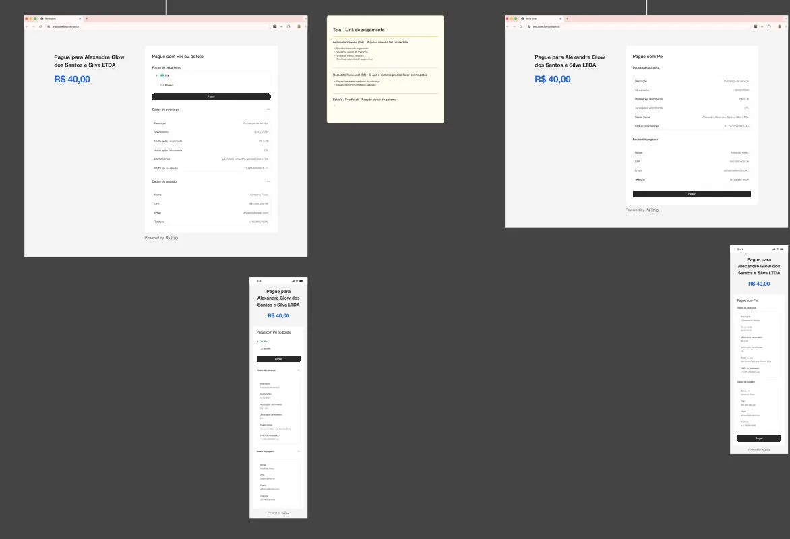
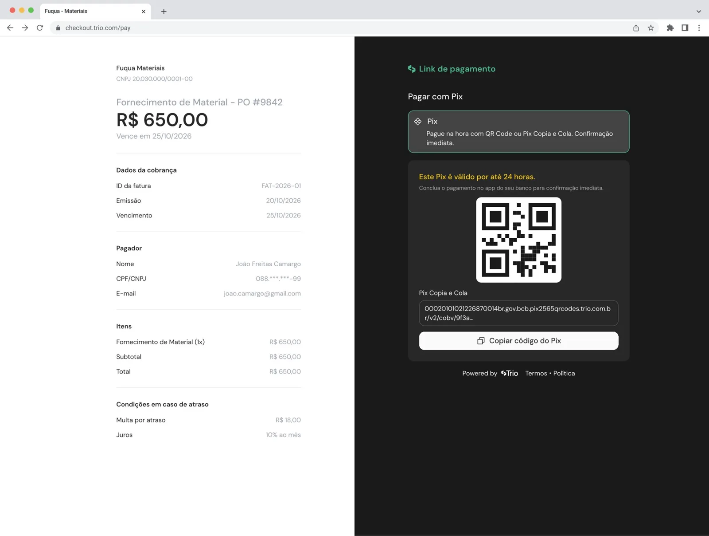
“Immediate charge?” and “mandatory recurrence?”. The Central Bank journey comes from the answers, with no regulatory jargon on screen.
A single path for Journeys 2, 3 and 4, aligned with the guide.
Only the recurrence fields change, so existing users don't have to relearn anything.
Summary on the left, payment on a dark panel on the right. Amount and payee stay visible the whole time.
Icon, message, details and actions. Every state says what happened and what to do next.
The 3-second celebration plays once and stops. Since Figma's player loops animations, it went straight to code.
Before, Pix, boleto and success were one-off screens with little information after payment. Now they all follow the same pattern.
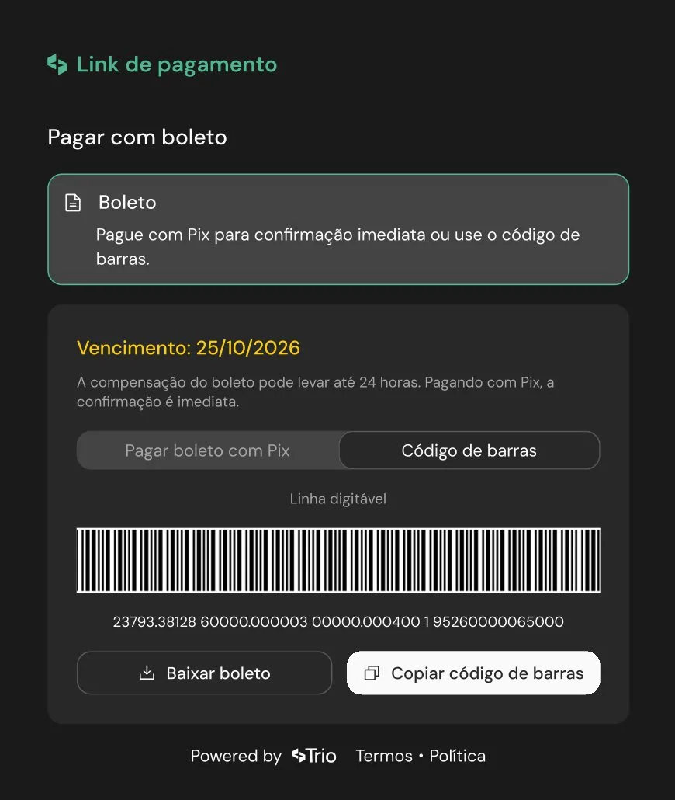
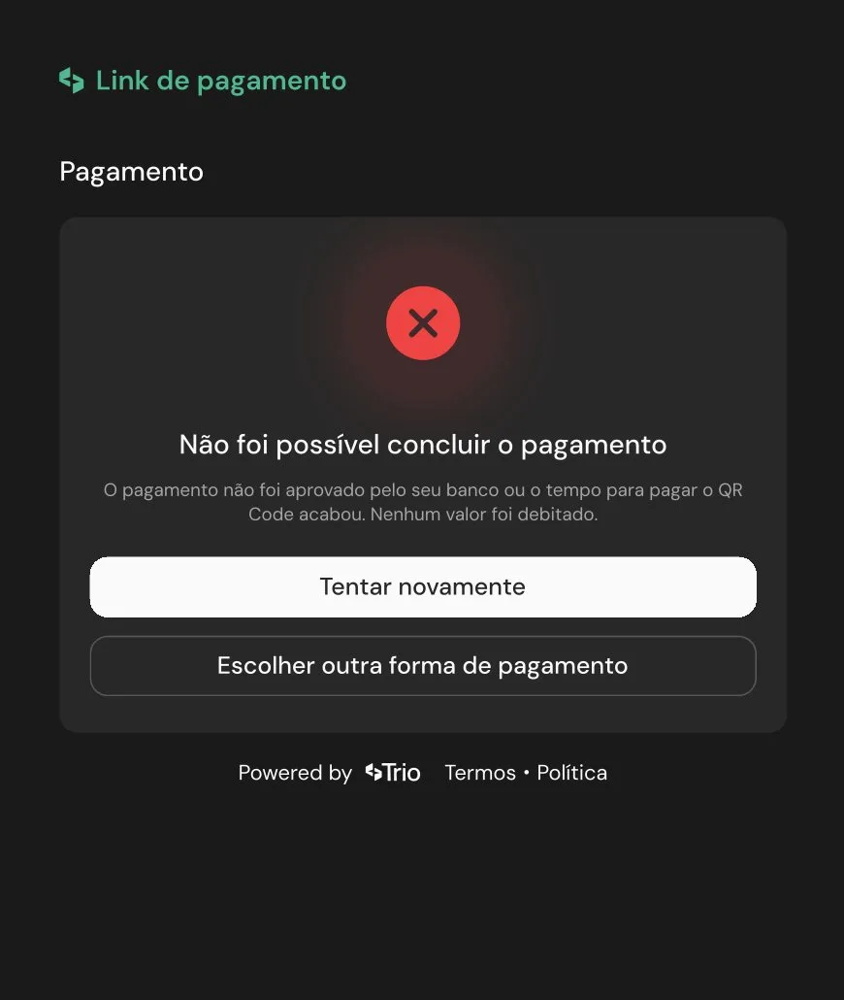
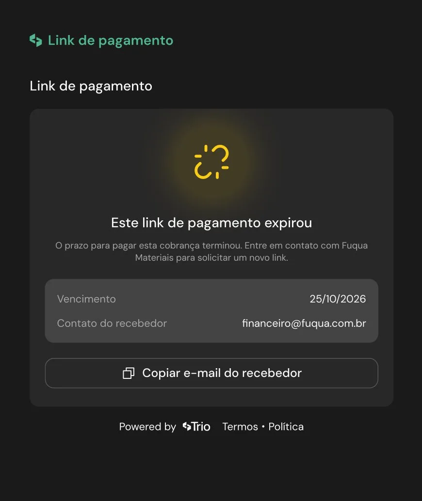
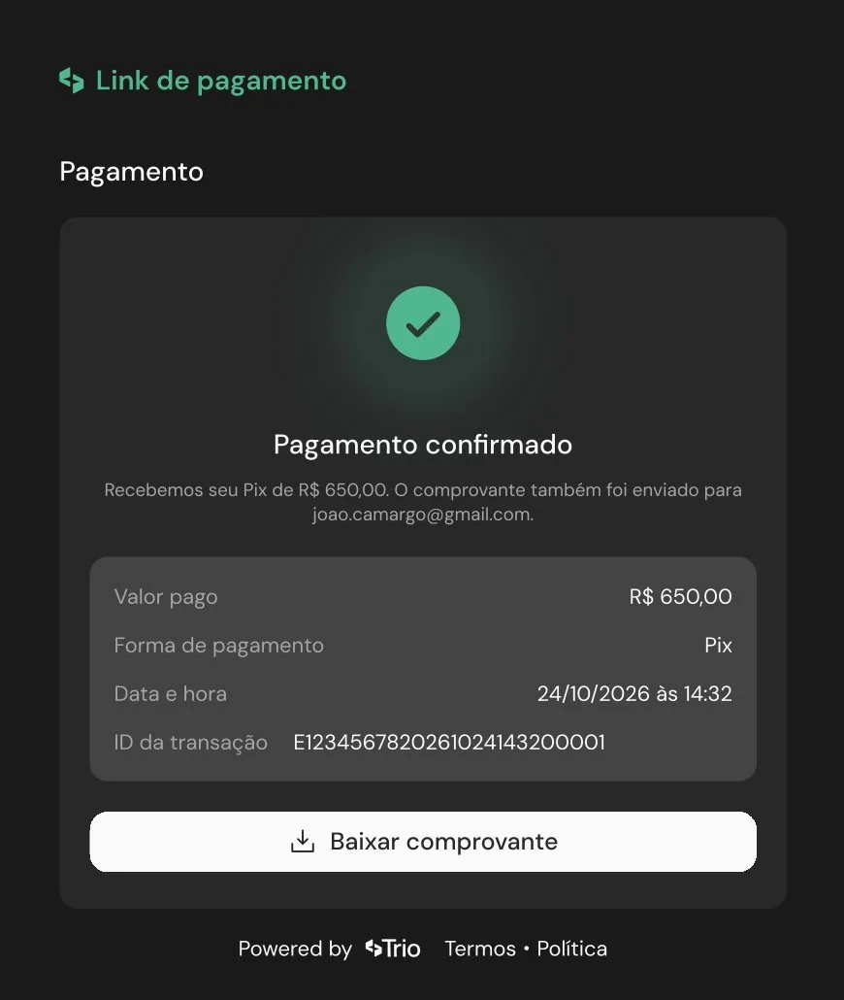
At the end, I asked Claude for a technical retrospective of the session. Every misstep became a reusable skill for the next feature.
The first recurring flow was built before finding the existing mockup, and most of it was thrown away.
The first boleto came out with hand-picked colors and had to be redone in OLO tokens.
Three rounds of Figma animation before finding out the player loops on its own.
“In node X, change only Y” beats open requests. Ambiguity costs rework.
Usage metrics being collected. [UPDATE WHEN DATA IS IN]